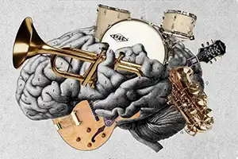
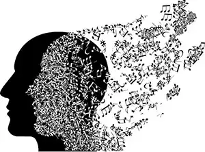

Beyond the Beat
Uncovering Sound, History, and the Human Experience
Music Therapy Paths
Sensory Sound Immersion

The Musical Mind
Cognitive Sound Processing

Anatomy of Melody
Harmonic Energy
Analog Resonance
Elemental Harmony